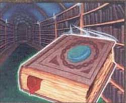
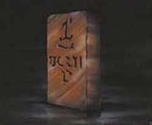

REGOLE GENERALI PER LA PRODUZIONE DEGLI INCANTAMENTI MINORI
Gli incantamenti magici minori possono essere creati dai chierici di Srodan a partire dal raggiungimento di un livello minimo che varia al variare della potenza dell'incantamento minore come previsto nella seguente tabella:
|
POTENZA DELL'INCANTAMENTO |
LIVELLO RICHIESTO |
| Least Minor Enchantment | 4° livello di esperienza |
| Lesser Minor Enchantment | 5° livello di esperienza |
| Minor Enchantment | 6° livello di esperienza |
| Superior Minor Enchantment | 7° livello di esperienza |
| Greater Minor Enchantment | 8° livello di esperienza |
REGOLE SPECIFICHE PER PRODURRE INCANTAMENTI MINORI DI SRODAN
1) I VOLUMI SACRI DI SRODAN :

I chierici di Srodan
che desiderano creare
incantamenti magici minori devono possedere i relativi tomi sacri. I tomi sacri
sono oggetti personali di ogni chierico. Ogni tomo sacro è relativo ad una
determinata potenza di incantamenti, il costo del volume ed il relativo costo della
manutenzione mensile è indicato nella seguente tabella.
Possedere questi tomi, come del resto ogni altro tomo
sacro, rientra nella pratica del culto della divinità. Per tale motivo il
chierico che acquista tali tomi
riceverà un ammontare
di punti esperienza
bonus come indicato nella sottostante tabella. Occorre osservare che
il chierico acquisirà i punti esperienza solo quando abbia
raggiunto il livello di esperienza minimo necessario a produrre quella tipologia
di incantamento. Si noti che questi punti esperienza saranno applicati unicamente al personaggio
ed in nessuna misura ai punti partenza e che, di ruolo, il chierico eviterà in
ogni modo di disfarsi dei suoi tomi sacri (qualora li venda o li regali costui
sarà quindi penalizzato dal Dungeon Master).
|
POTENZA DELL'INCANTAMENTO |
COSTO DEL TOMO |
MANUTENZIONE |
XP BONUS |
| Least Minor Enchantment | 400 g.p. | 2,5 g.p. / mese | 100 xp |
| Lesser Minor Enchantment | 500 g.p. | 3 g.p. / mese | 150 xp |
| Minor Enchantment | 600 g.p. | 4 g.p. / mese | 300 xp |
| Superior Minor Enchantment | 1000 g.p. | 7,5 g.p. / mese | 500 xp |
| Greater Minor Enchantment | 2000 g.p. | 15 g.p. / mese | 1000 xp |
2) LA SACRA TAVOLA DI BRONZO :

I chierici di Srodan che desiderano creare incantamenti magici minori devono poter operare presso la sacra tavola di bronzo. Si tratta di una tavola sacra alta due metri interamente costruita in bronzo con incise sulla sua superficie rune sacre a Srodan. Questa tavola dal valore di 2500 monete d'oro (con una manutenzione mensile pari a 35 g.p./mese) deve essere posizionata in una sala ad essa dedicata all'interno di un tempio attivo delle divinità. Intorno a tale tavola possono operare anche contestualmente fino a sei chierici di Srodan. In un tempio possono essere posizione più tavole purché ognuna di esse si trovi in una diversa sala.
3) TEMPO DI PRODUZIONE : Il tempo di produzione minimo di un incantamento minore dipende dal tipo di incantamento ed è espresso nella seguente tabella. Il chierico può dedicare più o meno tempo alla produzione di un incantamento minore, rispettivamente migliorando o peggiorando le proprie possibilità di successo. In ogni caso non occorre che il chierico effettui i giorni di lavoro consecutivamente ben potendo sospendere il lavoro quando desidera per poi riprenderlo successivamente.
| TIPOLOGIA DI INCANTAMENTO |
LIVELLO DI ESPERIENZA DEL CHIERICO DI SRODAN |
|||||
| 4° LIVELLO | 5° LIVELLO | 6° LIVELLO | 7° LIVELLO | 8° LIVELLO | 9+° LIVELLO | |
| Birra Nanica (tutte le tipologie) | 21 | 18 | 15 | 12 | 9 | 9 |
| Pergamena di Srodan | 24 | 21 | 18 | 15 | 12 | 9 |
| Violenza Nanica Inferiore | -- | 33 | 30 | 27 | 24 | 21 |
| Martello Guardiano | -- | 30 | 27 | 24 | 21 | 18 |
| Manifattura Sacra | -- | 30 | 27 | 24 | 21 | 18 |
| Difesa Minore dai Colossi | -- | -- | 42 | 39 | 36 | 33 |
| Ring of Lesser Endurance | -- | -- | 45 | 42 | 39 | 36 |
| Violenza Nanica | -- | -- | -- | 54 | 51 | 48 |
| Iron Helm of Dwarven Assault | -- | -- | -- | 54 | 51 | 48 |
| Difesa Runica | -- | -- | -- | 57 | 54 | 51 |
| Combattività della Razza Nanica | -- | -- | -- | 57 | 54 | 51 |
| Calice del Rinvigorimento | -- | -- | -- | 60 | 57 | 54 |
| Violenza Nanica Superiore | -- | -- | -- | -- | 99 | 96 |
4) COSTI DI PRODUZIONE : Per la produzione di un incantamento minore il chierico deve utilizzare un ammontare di reagenti e polveri magiche pari ad un determinato ammontare del valore finale dell'incantamento. Il chierico può decidere di utilizzare componenti magici in misura ridotta, normale od abbondante. Questa scelta di ripercuoterà sulle % di successo dello stesso nella produzione dell'oggetto magico, come in seguito specificato.
|
AMMONTARE DI REAGENTI |
% DEL VALORE FINALE |
| Componenti magici in misura ridotta | 20 % |
| Componenti magici in misura comune | 25 % |
| Componenti magici in misura abbondante | 30 % |
5) PERCENTUALE DI SUCCESSO : Al termine dei giorni di lavoro il chierico potrà tirare un dado percentuale per verificare se la creazione dell'oggetto ha avuto successo. Qualora il tiro del dado dia un risultato negativo, il chierico avrà perso tempo e denaro (costi di produzione) e non avrà incantato l'oggetto. Il chierico, però, potrà in futuro ripetere il procedimento al fine di incantamento con lo stesso incantamento minore il medesimo oggetto. In questo caso, il chierico impiegherà solo la metà del tempo e delle risorse richieste dal procedimento prescelto ottenendo un bonus alla percentuale di successo pari al +5% cumulativo fino ad un bonus massimo del +15%. In nessun caso il chierico potrà ottenere una percentuale di successo superiore al 95%, risultando un risultato da 96 a 100 sempre in un fallimento critico. In caso di fallimento critico il personaggio non potrà più provare ad incantare quel singolo oggetto con quel determinato incantamento minore. Con un tiro naturale da 01 a 05, invece, si verificherà un successo critico. In caso di successo critico il procedimento di incantamento sarà riuscito ed il chierico avrà anche risparmiato il 10% dell'ammontare di reagenti magici.
|
POTENZA DELL'INCANTAMENTO |
% BASE DI SUCCESSO |
| Least Minor Enchantment | 33 % |
| Lesser Minor Enchantment | 30 % |
| Minor Enchantment | 27 % |
| Superior Minor Enchantment | 24 % |
| Greater Minor Enchantment | 21 % |
|
LIVELLO DI ESPERIENZA DEL MAGO |
MODIFICATORE % |
| Per ogni livello di esperienza raggiunto | + 1 % |
| Per ogni superiore grado di potenza di minor enchantment che il chierico è potenzialmente in grado di produrre rispetto a quello che sta producendo * | + 5 % (max +20%) |
|
COMPETENZE POSSEDUTE |
MODIFICATORE % |
| Se il chierico riesce in una prova in Ceremony | + 5 % |
| Se il chierico riesce in una prova in Religion | + 3 % |
|
TEMPO DI PRODUZIONE |
MODIFICATORE % |
| Riduzione del tempo di produzione * | - 5 % |
| Tempo di produzione base | nessuno |
| Aumento del tempo di produzione * | + 5 % |
|
AMMONTARE DI REAGENTI |
MODIFICATORE % |
| Componenti magici in misura ridotta | - 5 % |
| Componenti magici in misura comune | nessuno |
| Componenti magici in misura abbondante | + 5 % |
|
CRISTALLO DI ROCCIA SACRO |
MODIFICATORE % |
| Ogni due Punti Sacri utilizzati dal Cristallo | + 1% (max +10%) |
| * Questo bonus cumulativo si aggiunge a quello generico dovuto all'esperienza del chierico. Per determinare l'ammontare di questo bonus occorre determinare quanti incantamenti di potenza superiore il chierico sarebbe potenzialmente in grado di creare per il livello di esperienza raggiunto. Per ogni incantamento di potenza superiore al quale il chierico ha potenzialmente accesso costui riceve un bonus cumulativo del +5%. Qualora, ad esempio, un chierico di 8° livello si cimentasse a creare un Lesser Minor Enchantment costui otterrebbe per il suo livello di esperienza un bonus base di +8 oltre ad un bonus di +15 per essere in grado di produrre incantamenti di tre potenze superiori. Se, invece, lo stesso chierico si cimentasse a creare un Minor Enchantment costui otterrebbe per il suo livello di esperienza un bonus base di +8 oltre ad un bonus di +10 per essere in grado di produrre incantamenti di tre potenze superiori. |
| * L'ammontare di giorni di differenza in caso di riduzione od aumento dei tempi di produzione sarà pari a due giorni per potenza di incantamento come indicato nella seguente tabella (tale riduzione/incremento potrà essere operato un'unica volta): |
|
POTENZA DELL'INCANTAMENTO |
GIORNI OPZIONALI |
| Least Minor Enchantment | 2 giorni |
| Lesser Minor Enchantment | 4 giorni |
| Minor Enchantment | 6 giorni |
| Superior Minor Enchantment | 8 giorni |
| Greater Minor Enchantment | 10 giorni |
5 bis) MODIFICHE SPECIFICHE PER TIPOLOGIA DI INCANTAMENTO
| Violenza Nanica Inferiore |
| Violenza Nanica |
| Combattività della Razza Nanica |
| Violenza Nanica Superiore |
|
QUALITA' DELL'OGGETTO |
MODIFICATORE % |
| Arma di comune qualità | - 9 % |
| Arma di buona qualità | - 6 % |
| Arma di eccellente qualità | - 3 % |
| Arma di superba qualità | nessuno |
| Arma magica con incantamento maggiore | +5 % |
| Arma di materiale speciale Arcanite | +1 % |
| Arma di materiale speciale Mithril | +2 % |
| Arma di materiale speciale Adamantium | +3 % |
| Difesa Runica |
|
QUALITA' DELL'OGGETTO |
MODIFICATORE % |
| Corazza di qualità comune | - 6 % |
| Corazza di buona qualità | - 3 % |
| Corazza di eccellente fattura | + 3 % |
| Corazza magica con incantamento maggiore | + 6 % |
| Corazza di materiale speciale Arcanite | +1 % |
| Corazza di materiale speciale Mithril | +2 % |
| Corazza di materiale speciale Adamantium | +3 % |
| Calice del Rinvigorimento |
|
QUALITA' DELL'OGGETTO |
MODIFICATORE % |
| Valore del Calice da 50 a 99 g.p. | - 3 % |
| Valore del Calice da 100 a 149 g.p. | nessuno |
| Valore del Calice da 150 a 199 g.p. | +3% |
| Valore del Calice da 200 g.p. | +5 % |
| Per ogni 100 g.p. di gemme incastonate nel Calice | +1 % (fino ad un massimo di +10%) |
6) PUNTI
ESPERIENZA
Qualora il chierico
riesca nella creazione di un incantamento minore costui
riceverà, la prima volta che riesce nella
costruzione di un tipo specifico di oggetto magico, punti esperienza
pari al 100% di quelli dell'incantamento, mentre le volte
successive,
punti esperienza
pari al 50% di quelli dell'incantamento che ha
creato. Ogni volta che, invece, costui
porti a compimento il tentativo senza riuscire ad incantare l'oggetto riceverà
un ammontare di
punti esperienza pari al 25% di quelli
dell'incantamento minore che ha provato a creare. Si noti che
questi punti esperienza saranno applicati unicamente al personaggio ed in
nessuna misura ai punti partenza.
Un chierico di Srodan che, avendo raggiunto l'ottavo livello di esperienza, sia
riuscito nella creazione di un incantamento minore per categoria di potenza
otterrà un bonus costante del
+2% ogni volta che ottiene punti esperienza fino
a che resterà in possesso di tutti i tomi sacri necessari alla creazione degli
oggetti magici minori. Si noti che questo bonus è applicato unicamente ai punti
esperienza del personaggio e non ai punti partenza del giocatore. Inoltre,
questo bonus si applica solo ai punti esperienza acquisiti dal personaggio nel
corso delle sedute di gioco e
non incide nei punti esperienza calcolati in fase di
creazione del personaggio.